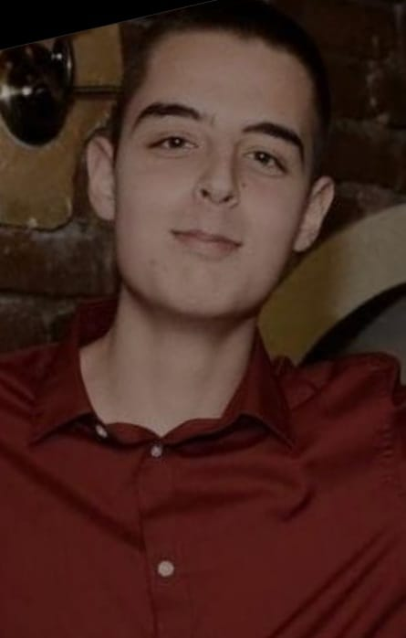

Recite drogama NE!
O Meni

Moje ime je Nikola Eremija (101/21). Zavrsio sam ETS "Rade Koncar".
Trenirao sam kik boks 13 godina, zbog povrede na drzavnom prvenstvu
sprecen sam da nastavim. Nakon povrede razvio sam strast prema
programiranju i smatram da je to najveci izum novog doba.
Moj blizak prijatelj je pre par meseci preminuo zbog upotrebe droge.
Ovo su bile njegove poslednje reci: "Recite drogama NE! ".
Iz tog razloga, u njegovu cast, napravio sam ovaj sajt da bih
podigao svest mladima.
Na sajtu su citirane reci lecenog narkomana.